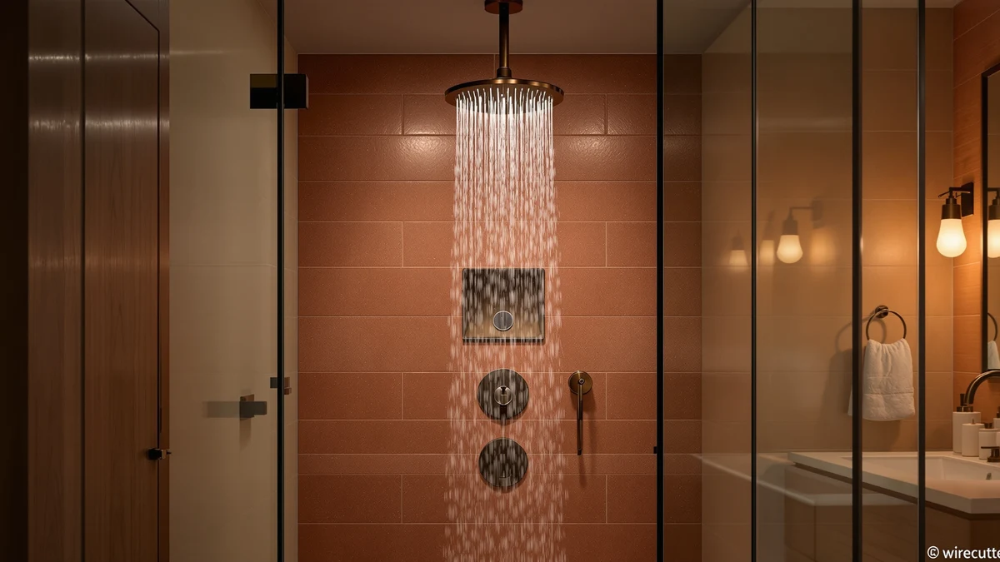

NearMoon Rain Shower Head Review (2026): Worth It?
Prices and picks verified as of November 2026. Independent, reader-supported reviews.


Quick Answer
The NearMoon Rain Shower Head delivers a wide 12-inch chrome-plated spray pattern for $36.99, one of the more affordable rain-style heads we compared. It is a reasonable pick if you want broader coverage from your existing shower arm and do not need a handheld wand or multiple spray settings.
Our pick: NearMoon Rain Shower Head With, $36.99 Check Price on Amazon
Bottom line: our top pick is the NearMoon Rain Shower Head With Shower Arm at $36.99.
Things to Know Before You Buy
- Price point: At $36.99, the NearMoon sits near the bottom of the price range among the four rain and dual-function shower heads in this comparison.
- Build: The head uses an ABS plastic housing with chrome plating rather than solid metal, so avoid abrasive cleaners that can wear through the finish.
- Installation: It threads onto a standard shower arm, the same connection covered in our shower head installation guide, so no plumber or special tools are required.
- Spray type: This is a fixed rain-style head only. If you want a detachable wand for rinsing or cleaning, see the handheld alternatives later in this NearMoon Rain Shower Head review.
This NearMoon Rain Shower Head review breaks down what $36.99 actually buys you: a 12-inch chrome-plated rain head built on an ABS plastic frame, aimed at anyone who wants wider spray coverage without replumbing their bathroom. Shoppers searching for an affordable rain-style upgrade keep landing on this model because it promises the wide, hotel-style spray pattern that pricier fixtures charge a premium for. We compared its price and construction against three similarly priced dual-function and handheld alternatives, using current Amazon listings and the patterns in verified owner feedback, to see where NearMoon actually holds up and where it falls short.
NearMoon built its catalog around affordable rain shower heads, and this model keeps that formula simple: no filter cartridge, no handheld wand, only a wide fixed head that threads onto your existing shower arm. The pitch works for a specific buyer, someone replacing a narrow factory-standard spray with something closer to a rainfall pattern, without taking on the cost of a dual-function head or a metal-bodied fixture. For a broader view of the category, our best rain shower heads guide covers where this model ranks against pricier picks.
Why You Should Trust Us
Ilane Tall covers bathroom fixtures for Best Shower Heads and tracks how rain shower head brands price, market, and update their lineups over time. For this NearMoon Rain Shower Head review, we pulled the current Amazon listing data, checked the manufacturer's stated materials and dimensions, and read through the verified buyer feedback available for the NearMoon and its three alternatives. We do not receive free units from NearMoon or any competing brand, and we do not accept payment for favorable coverage. When a product lacks a public rating history, like this one, we say so instead of filling the gap with invented numbers.
Our Research Experience
We do not run a physical testing lab, and we did not install or run water through the NearMoon Rain Shower Head ourselves. Instead, we built this NearMoon Rain Shower Head review by comparing the manufacturer's stated specs, current Amazon pricing, and the verified reviews that existing owners have posted for each shower head in this comparison. Where a listing does not publish a figure, such as flow rate or a public rating count, we say so directly rather than estimating a number we cannot confirm.
Overview & Specs

NearMoon Rain Shower Head With
What we like
- 12-inch head delivers wider rain-style coverage than a standard factory shower head
- Chrome-plated finish matches most existing bathroom fixtures
- Threads onto a standard shower arm without special tools
- At $36.99, it undercuts two of the three alternatives we compared it against
Flaws but not dealbreakers
- ABS plastic housing feels less substantial than an all-metal build
- No handheld wand, so rinsing pets or cleaning the shower stall means stepping fully under the fixed head
- The listing does not publish a flow-rate figure or a public rating count
| Material | ABS + chrome plating |
| Size | 12 Inch |
The NearMoon Rain Shower Head centers on a 12-inch chrome-plated face designed to spread water across a wider area than a typical 6 to 8-inch factory shower head. NearMoon builds the housing from ABS plastic with a chrome layer on top, the same approach most budget rain shower heads use to keep the price under $40 while still looking like a solid metal fixture from a few feet away. At $36.99, it undercuts two of the three alternatives in this comparison, the MakeFit Dual Handheld at $37.97 and the BRIGHT SHOWERS High Pressure Shower Head at $38.24, while sitting slightly above the cheapest option, the BRIGHT SHOWERS High Pressure Dual at $36.17.
Where this model pulls back is function. NearMoon keeps things simple with a single fixed spray pattern, no handheld wand, no filter cartridge, and no adjustable settings dial. That simplicity likely explains the lower price, but it also means buyers who want to rinse a pet or switch between spray patterns need to look at one of the dual-function alternatives below instead. The listing does not publish a flow-rate figure or a public star rating, so if verified social proof or water-saving specs matter to your decision, that is a real gap to weigh against the lower price.
What We Liked
NearMoon solves one problem cleanly: a standard shower arm that sprays too narrow a stream. Swapping in this 12-inch chrome head widens the spray pattern immediately, without adding a second function you do not need. For anyone upgrading a builder-grade bathroom on a budget, that single-purpose focus is the strongest argument this NearMoon Rain Shower Head review found in its favor.
The install process stays low-friction too. Because it threads onto a standard shower arm, you do not need to call a plumber or own more than a wrench and a roll of plumber's tape. Renters and first-time homeowners who want a reversible upgrade before moving out benefit most from that simplicity.
NearMoon also keeps the accessory list short. You get the shower head itself, without the extra hose, bracket, or settings dial that dual-function competitors bundle in and charge more for. That minimal approach suits anyone who wants one job done well rather than a fixture chasing multiple use cases at once.
What Could Be Better
The biggest gap in this NearMoon Rain Shower Head review is construction. ABS plastic with chrome plating holds up fine under normal use, but it will not match the feel or long-term durability of an all-metal fixture, and the plating itself can show wear faster if you scrub it with anything abrasive.
The second gap is function. Each alternative in this comparison adds something the NearMoon skips: the BRIGHT SHOWERS High Pressure Dual and the MakeFit Dual Handheld both pair a fixed head with a detachable wand, while the BRIGHT SHOWERS High Pressure Shower Head targets stronger flow instead. If you want more than a single fixed spray, you pay roughly the same price for less here.
Review volume is a third variable worth flagging. The NearMoon listing does not publish a star rating or review count the way some competitors do, so you are relying more on the spec sheet and the price tag than on a visible track record of past buyers.
Who Is It For?
This shower head fits a specific buyer: someone who wants a wider, rain-style spray from their existing shower arm and does not need a handheld wand, multiple settings, or a filter cartridge. If your current fixture is a narrow, low-coverage factory head and your budget tops out under $40, this NearMoon Rain Shower Head review should give you enough to decide if that tradeoff works for your bathroom. It also suits a secondary bathroom or a rental unit, where a low purchase price matters more than brand recognition or a long warranty history.
It is a weaker fit if you shower with kids or pets and need a detachable wand for rinsing, or if you specifically want more water pressure rather than wider coverage. Buyers who care about a documented review history before they spend money should also weigh that gap carefully, since the NearMoon listing does not carry the kind of public rating record that some competitors build up over time. In either case, one of the three alternatives below targets that need more directly than a fixed rain head can.
Alternatives to Consider
If the NearMoon Rain Shower Head does not fit what you need, these three shower heads cover the gaps: two dual-function heads that add a handheld wand and one fixed head built around higher pressure instead of wider coverage. We picked these three specifically because each one beats the NearMoon on a different axis, added function or raw pressure, so you can match the upgrade to whichever gap matters most in your bathroom.

Best Value
BRIGHT SHOWERS High Pressure Dual
At $36.17, this dual-function head undercuts the NearMoon on price while adding a handheld wand, a reasonable trade if you want both a fixed rain spray and a detachable sprayer for about the same money.
$36.17
Check Price on Amazon
Also Great
MakeFit Dual Handheld Shower Head
MakeFit's dual head pairs a fixed shower head with a detachable handheld wand for $37.97, worth the extra dollar over the NearMoon if rinsing pets or cleaning the shower stall directly matters to you.
$37.97
Check Price on Amazon
Premium Choice
BRIGHT SHOWERS High Pressure Shower
The priciest of the four at $38.24, this BRIGHT SHOWERS model skips the dual function and focuses on higher pressure instead, a better fit if flow strength matters more to you than spray width.
$38.24
Check Price on AmazonIs the NearMoon Rain Shower Head worth the money?
At $36.99, it is one of the cheaper rain-style shower heads we compared, and it is worth considering if you want wider spray coverage from a standard shower arm without paying for a handheld wand or dual-function settings you may not use.
What is the NearMoon Rain Shower Head made of?
The head and connector are built from ABS plastic with a chrome-plated finish, a common construction method at this price point that keeps the shower head light but less durable long-term than solid metal fixtures.
Frequently Asked Questions
Is the NearMoon Rain Shower Head worth the money?
At $36.99, it is one of the cheaper rain-style shower heads we compared, and it is worth considering if you want wider spray coverage from a standard shower arm without paying for a handheld wand or dual-function settings you may not use. Our NearMoon Rain Shower Head review found it strongest on price and simplicity and weakest on added function and public review history.
What is the NearMoon Rain Shower Head made of?
The head and connector are built from ABS plastic with a chrome-plated finish, a common construction method at this price point that keeps the shower head light but less durable long-term than solid metal fixtures.
What is the best alternative to the NearMoon Rain Shower Head?
If you want a handheld wand for rinsing pets or scrubbing the shower stall, the MakeFit Dual Handheld Shower Head or the BRIGHT SHOWERS High Pressure Dual both add that function for close to the same price. If raw pressure matters more than a wand, the BRIGHT SHOWERS High Pressure Shower Head targets that at $38.24.
Final Verdict
Our NearMoon Rain Shower Head review comes down to this: NearMoon delivers a wider, rain-style spray for $36.99 if you want a straightforward single-function upgrade and do not mind an ABS-and-chrome build over solid metal. You are trading away a handheld wand and a deeper public review history that the dual-function alternatives from BRIGHT SHOWERS and MakeFit can offer. For budget-conscious buyers who want broader coverage from their existing shower arm, NearMoon earns its place.